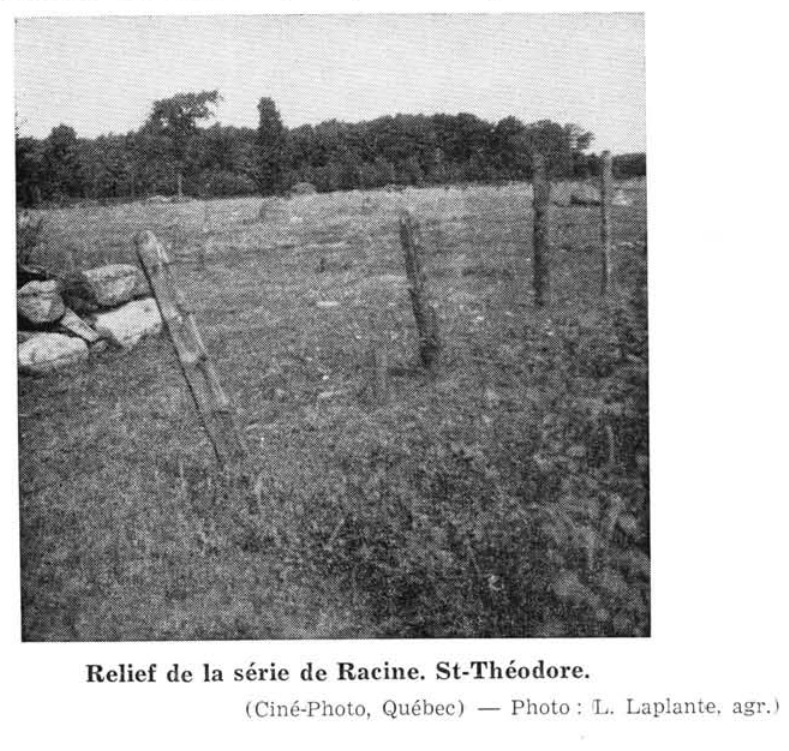
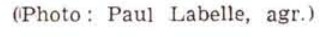

Identification & Caractéristiques Générales
La série de sols Racine est développée sur un till morainique à texture de loam sableux à franc-sableux, dont le matériau parental dérive principalement de l'altération d'ardoises cambriennes et de grès. Ce dépôt glaciaire a subi un remaniement partiel par l'eau, présentant localement des faciès sédimentaires s'apparentant à des délavages fluvio-glaciaires. Sur le plan géomorphologique, les sols de cette série s'observent à des altitudes variant généralement de 275 à 500 pieds, sur une topographie caractérisée par des pentes allant de légèrement ondulées et vallonnées à fortement montueuses.
Le profil pédologique présente une forte expression des processus de podzolisation, manifestée par une acidité prononcée et une faible fertilité naturelle. La texture dominante est un loam sableux conférant au sol une perméabilité élevée. Le drainage naturel interne et externe est modéré à bon, pouvant devenir excessif dans les secteurs où le till est plus sableux ou peu profond. La pierrosité de surface et de profil est variable mais généralement importante, incluant de nombreux galets de grès et caissons rocheux. Une phase peu profonde, caractérisée par un contact lithique rapproché et une pierrosité excessive restreignant fortement les interventions mécaniques, est fréquemment associée à cette série.
Les aptitudes agronomiques des sols de la série Racine sont limitées par la forte acidité, la pauvreté en éléments nutritifs, la pierrosité et la topographie accidentée. Les secteurs pierreux non arables sont maintenus sous couvert forestier, composé principalement d'érables, de bouleaux, de sapins, de pruches et de conifères divers, ou sont marginalement exploités comme pâturages. Les superficies défrichées et cultivables requièrent des interventions correctives majeures, incluant un épierrement systématique, un chaulage régulier pour neutraliser l'acidité, ainsi qu'une fertilisation minérale et organique rigoureuse pour assurer des rendements culturaux viables en grandes cultures ou en productions fourragères.
Classification Taxonomique & Environnement Pédologique
| Ordre Pédologique | Podzolique |
|---|---|
| Grand Groupe (SCSS) | Podzol ferro-humique |
| Sous-Groupe Taxonomique | Podzol ferro-humique orthique |
| Famille Pédologique | Loameuse-grossière, mixte sableux, acide |
| Mode de Dépôt Parental | Morainique |
| Classe de Drainage Naturel | Bien drainé |
| Régime Thermique & Humidité | Frais / Subhumide |
Description Morphologique du Profil Type
Séquences génétiques des horizons pédologiques caractérisant le profil type représentatif de la série Racine :
Profil représentatif — Comté de Shefford
✓ Source : Comté de Shefford — Page 40Couleur Munsell : Non précisée
Structure & Consistance : Granuleuse
Description morphologique : sol franc sableux noir et litière semi décomposée; faible structure granuleuse; quelques fragments d'ardoise; pH 4.1
Couleur Munsell : Non précisée
Structure & Consistance : Polyédrique à granulaire
Description morphologique : sol franc sableux blanc grisâtre; sans structure; meuble et poreux; ordinairement très plaqué; fragments d'ardoise et de grès; pH 4.7
Couleur Munsell : Non précisée
Structure & Consistance : Polyédrique à granulaire
Description morphologique : sol franc à franc sableux brun rougeâtre; granuleuse; friable; fragments d'ardoise et quelques galets de grès; pH 4.4
Couleur Munsell : Non précisée
Structure & Consistance : Polyédrique à granulaire
Description morphologique : sol franc sableux brun jaunâtre; granuleuse; assez ferme; souvent très sableux par plaques; galets de grès et d'ardoise; quelques grosses pierres; pH 4.7
Couleur Munsell : Non précisée
Structure & Consistance : Polyédrique à granulaire
Description morphologique : till franc sableux gris; légèrement marbré; généralement graveleux contient des grosses pierres de grès; pH 4.8
Profil représentatif — Comté de Drummond
✓ Source : Comté de Drummond — Page 60Couleur Munsell : 10YR 3/2, 10YR 2/2
Structure & Consistance : Finement granulée faiblement développée
Description morphologique : Loam sableux contenant beaucoup de matière organique mal décomposée, brun gris très foncé (10 YR 3/2), à l'état sec, brun très foncé (10 YR 2/2) à l'état humide; structure finement granulée faiblement développée; friable. La réaction (pH 5.2) est fortement acide.
Couleur Munsell : 5YR 6/2, 5YR 4/2
Structure & Consistance : Polyédrique à granulaire
Description morphologique : Loam sableux, gris rose (5 YR 6/2) à l'état sec, devenant gris rouge foncé (5 YR 4/2) à l'état humide; sans structure, ni consistance. La réaction (pH 5.0) est très fortement acide.
Couleur Munsell : 10YR 5/8, 5YR 4/6
Structure & Consistance : Polyédrique à granulaire
Description morphologique : Loam sablo-schisteux, brun jaune (10 YR 5/8) à l'état sec, rouge jaune (5 YR 4/6) à l'état humide; sans structure; lâche; contient des schistes rouges et des grès. La réaction (pH 5.3) est fortement acide.
Couleur Munsell : 10YR 6/6, 5YR 4/6
Structure & Consistance : Polyédrique à granulaire
Description morphologique : Gravier sableux, jaune brun (10 YR 6/6) à l'état sec, rouge jaune (5 YR 4/6) à l'état humide; sans consistance; lâche; gravier de schistes rouges et de grès. La réaction (pH 5.5) est fortement acide.
Couleur Munsell : 10YR 7/3, 10YR 4/3
Structure & Consistance : Polyédrique à granulaire
Description morphologique : Loam sablo-schisteux, brun très pâle (10 YR 7/3) à l'état sec, brun foncé (10 YR 4/3) à l'état humide; sans structure; légèrement tassé. La réaction (pH 5.6) est moyennement acide.
Profils Photographiques & Planches de Terrain
Documents iconographiques, figures pédologiques et coupes de terrain documentées dans les mémoires d'inventaire pour de la série Racine :


Propriétés Physico-Chimiques & Analyses de Laboratoire
| Horizon | Prof. (pces/cm) | Sable % | Limon % | Argile % | pH | C % | N % | Ca éch. | Mg éch. | K éch. | H+ éch. | Bases tot. | C.E.C. (meq/100g) | Saturation % | |||||
|---|---|---|---|---|---|---|---|---|---|---|---|---|---|---|---|---|---|---|---|
| 0 à 1 | A0 | 4 | — | — | — | — | — | — | — | — | — | 3.8 | 21.2 | 20.7 | 12.05 | 0.77 | 15.7 | 5.2 | 10,400 |
| 1 à 3 | A2 | 8 | 65 | 4 | 21 | 16 | 13 | 11 | — | 26 | 9 | 1.1 | 2.8 | 2.3 | 1.34 | 0.08 | 16.8 | 5.0 | 6,200 |
| 3 à 9 | B21 | 21 | 77 | 8 | 25 | 26 | 10 | 8 | — | 16 | 7 | 3.2 | 8.0 | 4.6 | 2.67 | 0.15 | 17.8 | 5.3 | 11,700 |
| 9 à 24 | B22 | 38 | 83 | 10 | 30 | 21 | 13 | 9 | — | 13 | 4 | 1.2 | 3.4 | 1.9 | 1.09 | 0.06 | 18.2 | 5.5 | 3,800 |
| 24 et plus | C | 12 | 65 | 4 | 8 | 9 | 23 | 21 | — | 26 | 9 | 0.5 | 1.5 | 0.4 | 0.21 | 0.01 | 21.0 | 5.6 | 1,200 |
Particularités Régionales, Phases & Variantes Pédologiques
Déclinaisons régionales, faciès texturaux, phases d'érosion ou de pierrosité et variantes cartographiées par étude pour de la série Racine :
| Étude Régionale | Symbole | Appellation / Phase / Variante | Différenciation avec la série type (Analyse pédologique) |
|---|---|---|---|
| Comté de Bagot | Ra |
Racine loam sableux | Modalité modale de référence (type de base de la série). |
| Comté de Shefford | Rsl |
Racine loam sableux | Conforme à la série type de référence (caractéristiques texturales et drainage identiques). |
Rslsh |
Racine loam sableux phase mince | Phase mince sur substrat rocheux (< 50 cm). | |
| Comté de Stanstead | Ra |
Racine loam sableux | Conforme à la série type de référence (caractéristiques texturales et drainage identiques). |
| Comté de Drummond | Ra |
Racine loam sableux schisteux | Conforme à la série type de référence (caractéristiques texturales et drainage identiques). |
Distribution Pédo-Paysagère & Représentativité Cartographique (Couverture PPS 2026)
- Brompton loam sableux très fin (BMP) — co-occurrente dans 9 polygone(s)
- Affleurements rocheux (ARR) — co-occurrente dans 3 polygone(s)
- Mawcook loam sableux (MWO) — co-occurrente dans 2 polygone(s)
Aptitudes Agronomiques, Hydropédologie & Conservation des Sols
Indicateurs Hydropédologiques & Vulnérabilité à l'Érosion (BDHP 2026)
Interprétation BDHP : Potentiel de ruissellement modérément faible. Infiltration modérée avec textures moyennes à modérément grossières.
Classement selon l'Inventaire des Terres du Canada (ITC / CLI) : Classe 1.
- Potentiel agricole : Terroir adapté aux cultures régionales selon la texture dominante et la régie de drainage.
- Contraintes majeures : Bien drainé. Risque d'engorgement temporaire ou d'excès d'eau printanier.
- Gestion & Aménagement : Drainage souterrain ou superficiel préconisé sur les terres planes. Chaulage et apport organique régulier selon les bilans agronomiques.
- Cultures adaptées : Grandes cultures (maïs, soya, céréales), prairies fourragères et cultures maraîchères selon le contexte géomorphologique.